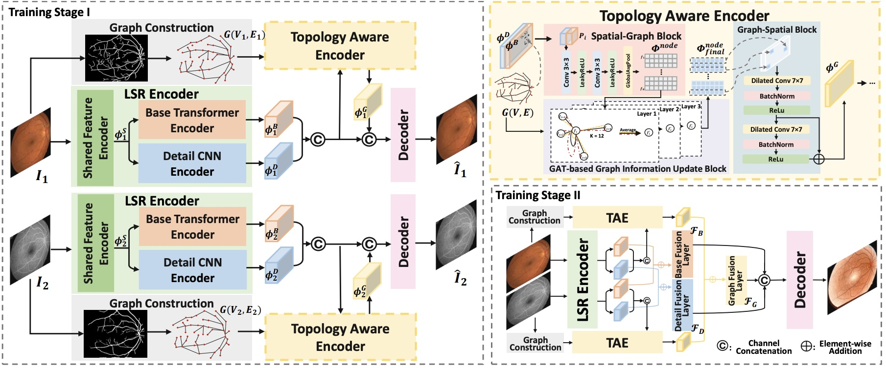
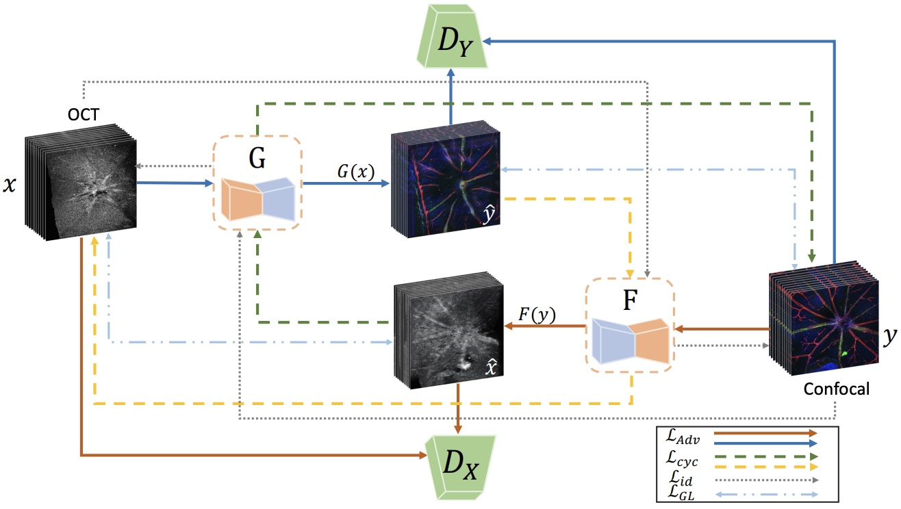
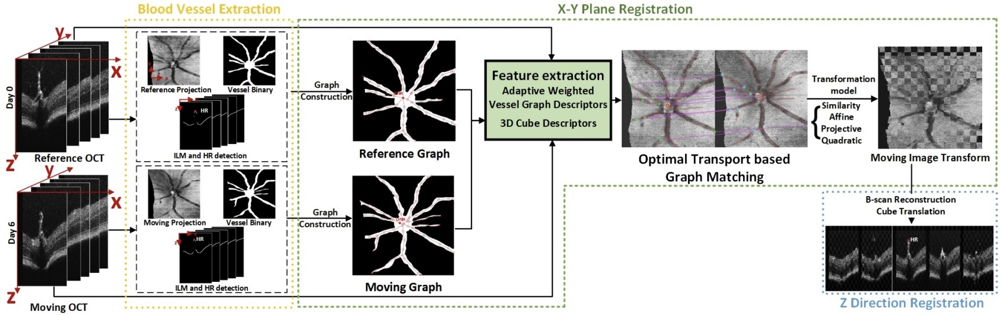
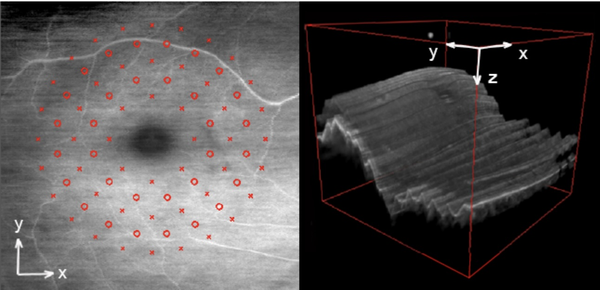
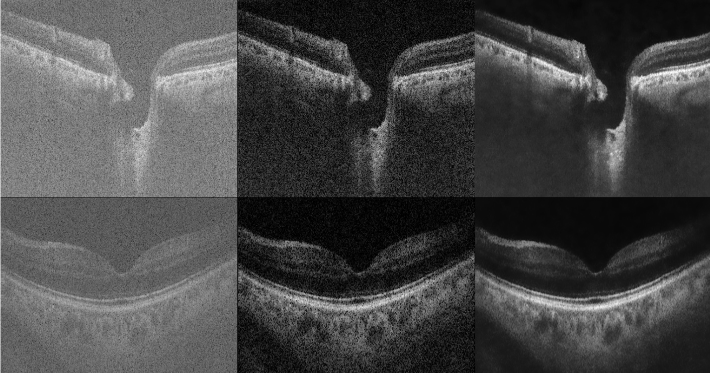

Computer Assisted Analysis of Ocular Imaging
Enhancement, Segmentation, Registration, Fusion and Classification


Adaptive-Weighted Bilateral Filtering and Other Pre-processing Techniques for Optical Coherence Tomography (CMIG, 2014)
Aim
This project aims to develop advanced image analysis tools to maximise the information inherent in retinal images. This comprehensive approach encompasses several key methodologies: enhancement to improve image quality, segmentation to isolate critical structures, registration to align images from different modalities, fusion to integrate complementary data, and classification to diagnose and monitor ocular conditions. The focus is on leveraging these techniques across various imaging modalities, including color fundus photography, optical coherence tomography (OCT), and confocal microscopy. By integrating these tools, the project seeks to provide a robust framework for the detailed analysis and interpretation of retinal images, facilitating early detection, diagnosis, and treatment of ocular diseases. This multidisciplinary effort aims to contribute significantly to the field of ophthalmology, offering enhanced diagnostic capabilities and ultimately improving patient outcomes.
Research team
- Alin Achim, N. Anantrasirichai and Lindsay Nicholson: Lead academics
- Xin Tian: PhD student
Methods
- Multi-modal Retinal Image Fusion (TaGAT) (MICCAI2024)

- Multi-modal Retinal Image Translation (OCT2Confocal) (ISBI2024)

- 3D retinal OCT image registration (ICIP2022)

- Texture-based glaucoma classification (ISIB2013)
An automated texture classification method for glaucoma was developed, utilising robust principal component analysis of texture descriptors. A multi-modal information fusion technique included visual field measurements, OCT, and retinal fundus photography.

- Adaptive-Weighted Bilateral Filtering (ICIP2013)
The method removes speckle while preserving useful retinal layer information using multi-scale despeckling based on a dual-tree complex wavelet transform (DT-CWT). Further enhancement is achieved through a novel adaptive-weighted bilateral filter (AWBF) that preserves texture.

Downloads
Publications
- TaGAT: Topology-Aware Graph Attention Network For Multi-modal Retinal Image Fusion. X Tian, N Anantrasirichai, L Nicholson, A Achim. Medical Image Computing and Computer Assisted Intervention (MICCAI). 2024
[ PDF] [ Code] - OCT2Confocal: 3D CycleGAN based Translation of Retinal OCT Images to Confocal Microscopy. X Tian, N Anantrasirichai, L Nicholson, A Achim. IEEE International Symposium on Biomedical Imaging. 2024
[ PDF] [ Code] - Optimal Transport-based Graph Matching for 3D retinal OCT image registration. X Tian, N Anantrasirichai, L Nicholson, A Achim. IEEE International Conference on Image Processing. 2022.
[ PDF] - Textural Feature Analysis of Optical Coherence Tomography Phantoms. M. Kulmaganbetov, R J Bevan, N. Anantrasirichai, Alin Achim, I. Erchova, N. White, J. Albon, J E Morgan. Electronics. 2022.
[ PDF] - Exploiting texture information in diagnosing Glaucoma. E.T. Gormus, N. Anantrasirichai, M. Bundy, I. Erchova, N. White, J. Fergusson, J. Morgan, L.B. Nicholson, A. Achim. In Proceedings of the IEEE Signal Processing and Communications Applications Conference (SIU). 2017
[ PDF] - Adaptive-Weighted Bilateral Filtering and Other Pre-processing Techniques for Optical Coherence Tomography. N. Anantrasirichai, L. Nicholson, J. E. Morgan, I. Erchova, K. Mortlock, R. V. North, J. Albon, and Alin Achim. Computerized Medical Imaging and Graphics. 2014
[ PDF] [ BibTeX] - Adaptive-weighted bilateral filtering for Optical Coherence Tomography. N. Anantrasirichai, L. Nicholson, J. E. Morgan, I. Erchova, and Alin Achim. In Proceedings of the IEEE International Conference on Image Processing (ICIP 2013).
[ PDF] - SVM-based texture classification in optical coherence tomography. N. Anantrasirichai, Alin Achim, J. E. Morgan, I. Erchova, and L. Nicholson. In Proceedings of the IEEE International Symposium on Biomedical Imaging (ISIB 2013).
[ PDF] - Curvelet domain image fusion of OCT and fundus imagery using convolution of meridian distributions. O. Pappas, N. Anantrasirichai, L. Nicholson, J. E. Morgan, I. Erchova, and Alin Achim. In Proceedings of the IEEE International Conference on Image Processing (ICIP 2013).
[ PDF]
Datasets
Related research
Related publications from VI-Lab
- PMT: Partial-Modality Translation Based on Diffusion Models for Prostate Magnetic Resonance and Ultrasound Image Registration. X Ma, N Anantrasirichai, S Bolomytis, A Achim. Medical Image Understanding and Analysis. 2024
[ PDF] - DUBLINE: A Deep Unfolding Network for B-line Detection in Lung Ultrasound Imagesy. T Yang, N Anantrasirichai, O Karakuş, M Allinovi, HC Koydemir, A Achim. IEEE International Symposium on Biomedical Imaging. 2024
[ PDF] - Parasitic Egg Detection and Classification in Low-cost Microscopic Images using Transfer Learning. T Suwannaphong, S Chavana, S Tongsom, D Palasuwan, T H Chalidabhongse, and N Anantrasirichai. SN Computer Science. 2023
[ PDF] [ Dataset] - ICIP 2022 Challenge on Parasitic Egg Detection and Classification in Microscopic Images: Dataset, Methods and Results. N Anantrasirichai, TH Chalidabhongse, D Palasuwan, K Naruenatthanaset, T Kobchaisawat, N Nunthanasup, K Boonpeng, X Ma, and A Achim. IEEE International Conference on Image Processing. 2022.
[ PDF] [ Dataset] [ Website]
Detection in different modalities
- Anomaly detection for the identification of volcanic unrest in satellite imagery. RG Popescu, N Anantrasirichai, J Biggs. IEEE International Conference on Image Processing. 2024
[ PDF] [ Project] - Object Recognition in Atmospheric Turbulence Scenes. D Hu, N Anantrasirichai, European Signal Processing Conference. 2023.
[ PDF] [ CODE] - Detecting Ground Deformation in the Built Environment using Sparse Satellite InSAR data with a Convolutional Neural Network. N. Anantrasirichai, J. Biggs, K. Kelevitz, Z. Sadeghi, T. Wright, J. Thompson, A. Achim and D. Bull. IEEE Transactions on Geoscience and Remote Sensing. 2020.
[ PDF] [Project] - A Deep Learning Approach to Detecting Volcano Deformation from Satellite Imagery using Synthetic Datasets. N. Anantrasirichai, J. Biggs, F. Albino, and David Bull. Remote Sensing of Environment. 2019.
[ PDF] [ BibTeX] [CODE] [Project]